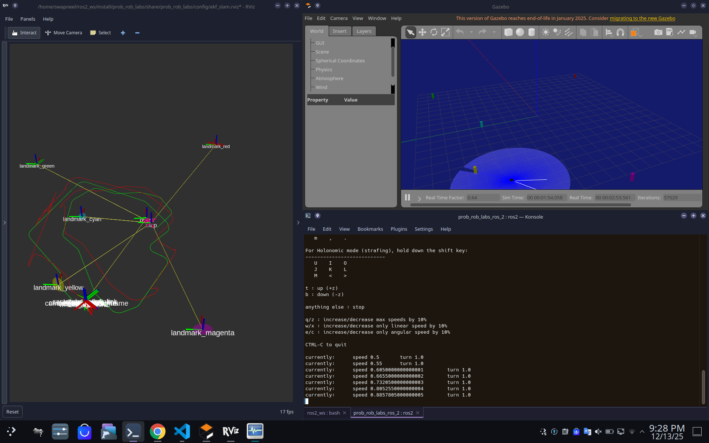

Columbia University
Aug 2024 — Dec 2025MS, Mechanical Engineering
Robotics and Control concentration.
Probabilistic RoboticsReinforcement LearningApplied RoboticsModel Predictive ControlModern ControlsData Science
Robotics Engineer
3+ years of industry experience building robotic software, backed by a graduate education in advanced robotic control and manipulation.
01 — About
I'm Swapneel, a Robotics Engineer at Hyundai Motor Group's Core R&D lab in Singapore, working on vision-guided assembly research and programming for automated EV manufacturing.
I recently completed my Master's in Robotics at Columbia University, where I focused on advanced control and dexterous manipulation through projects like the MiniBEE bimanual manipulator in the ROAM Lab. Before that, I spent 2 years as a robotics engineer at Augmentus and earned my Bachelor's in Mechanical Engineering from NTU.
With 3+ years of combined experience developing robotic software, I love digging into new problems, trying new approaches, and growing both professionally and personally along the way.
02 — Experience
03 — Education
Robotics and Control concentration.
Probabilistic RoboticsReinforcement LearningApplied RoboticsModel Predictive ControlModern ControlsData Science
Mechatronics and Robotics specialization.
Intro. to RoboticsMachine VisionMechatronics System DesignTheory of MechanismsCAD/CAM
04 — Projects




05 — Skills
Fluent in English and Hindi · elementary German (A2 certified)
06 — Contact
Open to robotics roles and research collaborations.